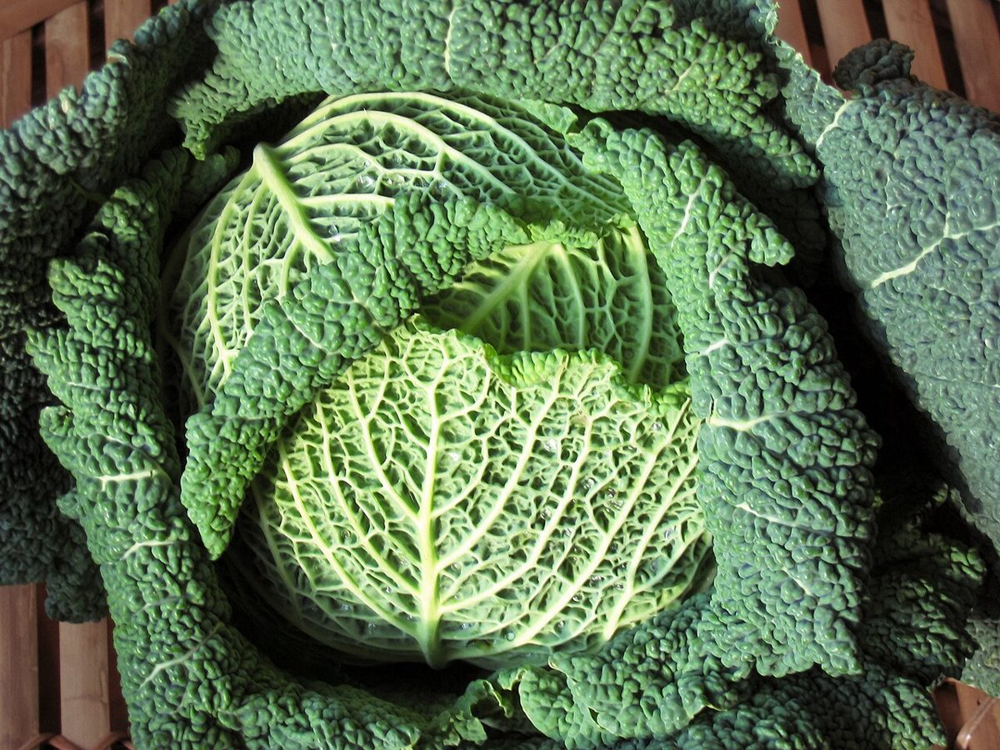
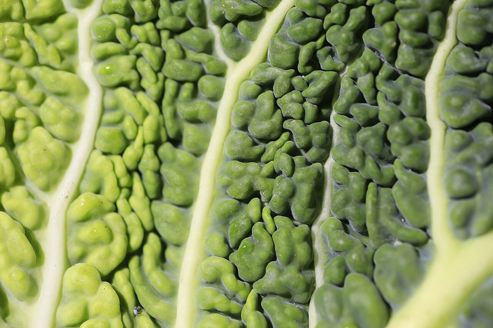

キャベツキャベツの側(イメージ)

シュー皮
シュー皮の側(イメージ)
制作側の連想
ひとつの音に、ふたつの顔
フランス語の「chou(シュー)」には、キャベツという意味と、シュークリームの「シュー」という意味があるそうです。店名の由来は分かりません。このページは、その言葉から制作側が連想して、画面を「キャベツ側(青緑)」と「シュー皮側(黄金色)」の二色に分けて作っています。制作側の連想で、お店の理念・由来とは無関係です。
ふたつのシュー
葉と皮を並べてみる。
写真は長門市やお店のものではなく、国外または撮影地不明のフリー素材です。
葉の側
縮れた葉が幾重にも重なる形。

皮の側
こんがりと色づいて、ふくらんだ形。

焼き色の見本
ふくらみから焼き色まで。
パンや生地の写真もイメージです。お店で扱うものを示すものではありません。


ご案内
お店のこと(確認できたものだけ)
| 所在地 | 〒759-4101 山口県長門市東深川2650-1 |
|---|---|
| 電話 | 0837-22-5658 |
| 営業時間 | 準備中 |
| 定休日 | 準備中 |
| ご予約 | 準備中 |
| 駐車場 | 準備中 |
| SNS | Instagram @okashinoatorie.chou |